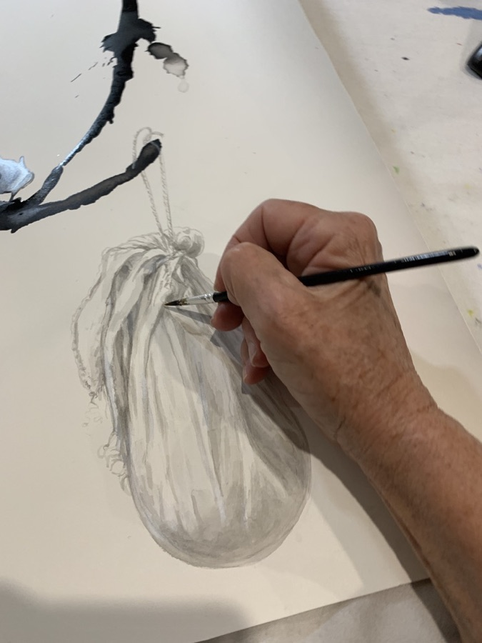

About

I was born in 1957 and live and work in the forest of Dondingalong, on the Mid North Coast of New South Wales.
I draw traditionally and experimentally on paper, often using ink and brush, black and coloured materials. My interests are in pareidolia and perception, personal and social issues, and drawing as therapy.
I hold a Bachelor of Visual Arts and a Master of Cross Disciplinary Art & Design from the University of NSW. My further independent art studies include marble sculpting at Studio Carlo Nicoli in Carrara, Italy, supervised research on Art & Animism with Dr Jacqueline Drinkall, online Art Writing and mentored programs with Amy Kennedy, and short diverse MOOCs.
As an artist, teacher, co-ordinator and curator, I have long-term associations with a variety of art communities including the Macleay Valley Community Art Gallery, Wonderland Framing & Art, local disability services, wider regional and interstate art communities, and life drawing groups.
I have been acknowledged with awards in several drawing prizes, including for animated drawing in FilmOneFest, USA. I exhibit regularly at the Macleay Valley Community Art Gallery.
An archive of my earlier work can be found on my previous website, with more on Instagram and videos on Vimeo.